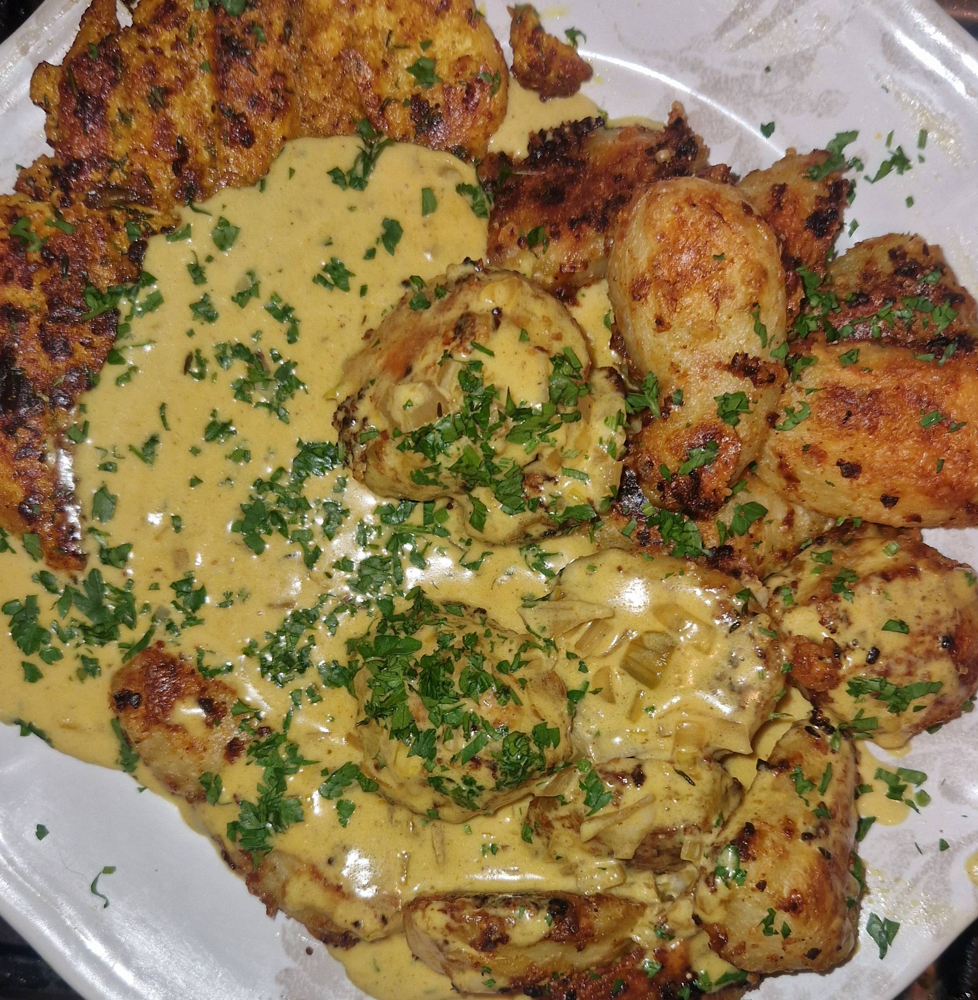
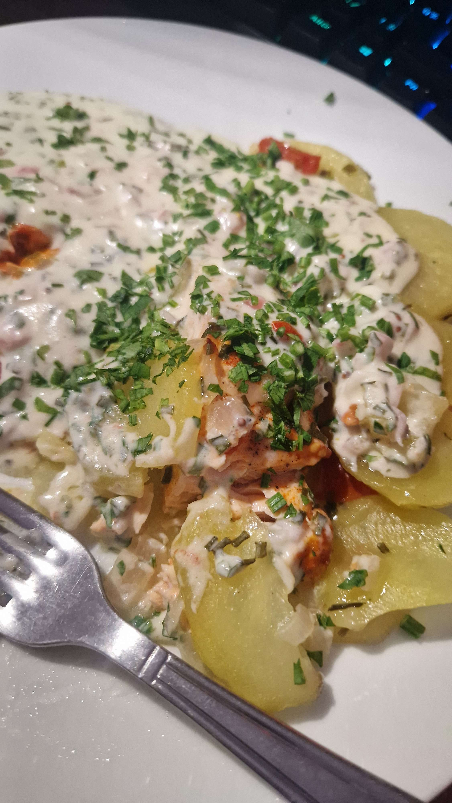

Mon Carnet de Recettes
☰
Entrées
Plats
Desserts
Autres
Viandes
+
Poulet
Bœuf
Canard
Porc
Veau
Poissons
+
Saumon
Thon
Légumes
+
Courgette
Tomate
Concombre
Féculents
+
Patate
Riz
Pâtes
Quinoa
Semoule
Boulgour

Poulet mariné et patates au four
Avec une sauce miam miam miam.

Saumon grillé et patates au four
Avec sa sauce au beurre citronné